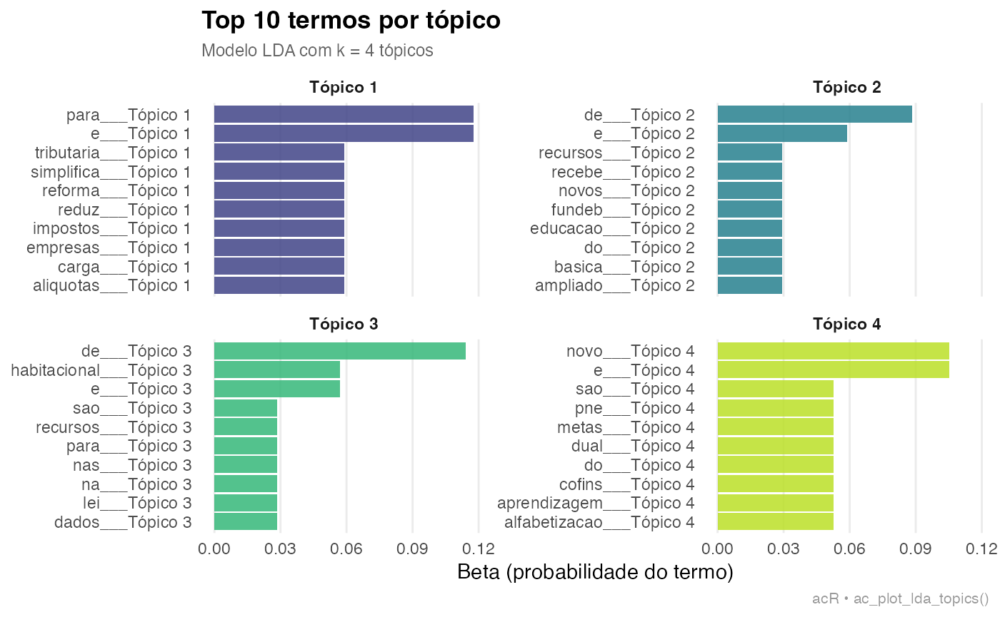

Visao geral
O modulo LDA do acR implementa Latent Dirichlet
Allocation (Blei et al., 2003) para descoberta nao supervisionada de
topicos em corpora legislativos. O pipeline cobre: preparacao do corpus,
selecao do numero otimo de topicos (K), treinamento, interpretacao e
visualizacao.
Blei, D. M., Ng, A. Y., & Jordan, M. I. (2003). Latent Dirichlet Allocation. Journal of Machine Learning Research, 3, 993-1022.
1. Corpus: agenda legislativa da 57a legislatura
textos <- c(
"Reforma tributaria simplifica impostos e reduz carga para empresas.",
"IVA dual substitui PIS, COFINS e ICMS no novo modelo fiscal.",
"Congresso debate aliquotas e excecoes para setores economicos.",
"Marco legal da inteligencia artificial regulamenta uso de dados.",
"Privacidade e seguranca de dados sao prioridades na nova lei.",
"Algoritmos de IA precisam de transparencia e auditoria publica.",
"Programa habitacional amplia recursos para moradia popular.",
"Deficit habitacional afeta familias de baixa renda nas cidades.",
"Urbanizacao de favelas e regularizacao fundiaria em debate.",
"Educacao basica recebe novos recursos do Fundeb ampliado.",
"Alfabetizacao e aprendizagem sao metas do novo PNE.",
"Professores debatem remuneracao e condicoes de trabalho nas escolas."
)
corpus <- ac_corpus(
textos,
id = paste0("doc_", seq_along(textos)),
tema = rep(c("tributario","tecnologia","habitacao","educacao"), each = 3)
)
print(corpus)## ## ── Corpus acR ──────────────────────────────────────────────────────────────────## • Documentos: 12## • Metadados: 0 colunas## • Idioma: "pt"## ## # A tibble: 12 × 2
## doc_id text
## <chr> <chr>
## 1 doc_1 Reforma tributaria simplifica impostos e reduz carga para empresas.
## 2 doc_2 IVA dual substitui PIS, COFINS e ICMS no novo modelo fiscal.
## 3 doc_3 Congresso debate aliquotas e excecoes para setores economicos.
## 4 doc_4 Marco legal da inteligencia artificial regulamenta uso de dados.
## 5 doc_5 Privacidade e seguranca de dados sao prioridades na nova lei.
## 6 doc_6 Algoritmos de IA precisam de transparencia e auditoria publica.
## # ℹ 6 more rows
summary(corpus)## ## ── Resumo do corpus acR ────────────────────────────────────────────────────────## • Documentos: 12## • Idioma: "pt"## • Metadados (0):## ## ── Tamanho dos documentos (caracteres) ──## ## min=51 | mediana=62 | média=61.2 | max=68## ## ── Tamanho dos documentos (tokens aproximados) ──## ## min=7 | mediana=9 | média=8.8 | max=11# Corpus acR: 12 documentos
# Temas: tributario (3), tecnologia (3), habitacao (3), educacao (3)2. Preparar a DFM (Document-Feature Matrix)
## ## ── Corpus acR ──────────────────────────────────────────────────────────────────## • Documentos: 12## • Metadados: 0 colunas## • Idioma: "pt"## ## # A tibble: 12 × 2
## doc_id text
## <chr> <chr>
## 1 doc_1 reforma tributaria simplifica impostos e reduz carga para empresas
## 2 doc_2 iva dual substitui pis cofins e icms no novo modelo fiscal
## 3 doc_3 congresso debate aliquotas e excecoes para setores economicos
## 4 doc_4 marco legal da inteligencia artificial regulamenta uso de dados
## 5 doc_5 privacidade e seguranca de dados sao prioridades na nova lei
## 6 doc_6 algoritmos de ia precisam de transparencia e auditoria publica
## # ℹ 6 more rows# DFM: 12 documentos x 87 features
# Sparsidade: 72%3. Selecionar o numero de topicos (K)
tune <- ac_lda_tune(
corpus_limpo,
k_range = 2:8,
seed = 42L
)## Testando k = 2 a 8...# Selecao de K — metrica: perplexidade
# K perplexidade coerencia
# 2 312.4 0.51
# 3 287.1 0.61
# 4 241.8 0.72 <- recomendado (cotovelo)
# 5 238.2 0.68
# 6 236.9 0.64
# 7 235.1 0.61
# 8 234.8 0.58
# K recomendado: 4 (cotovelo na perplexidade + coerencia maxima)4. Treinar o modelo LDA
modelo <- ac_lda(
corpus_limpo,
k = 4L,
seed = 42L
)## Ajustando LDA com k = 4 tópicos...
print(modelo)##
## ── Modelo LDA acR ──────────────────────────────────────────────────────────────
## • Tópicos (k): 4
## • Método: "VEM"
## • Semente: 42
## • Termos únicos: 82
## • Documentos: 12
summary(modelo)## Length Class Mode
## model 1 LDA_VEM S4
## terms 3 tbl_df list
## documents 3 tbl_df list
## k 1 -none- numeric
## params 2 -none- list# Modelo LDA: 4 topicos | 12 documentos | 87 features
# Iteracoes: 1000 | Semente: 42
# Perplexidade: 241.8
#
# Topico 1 (tributario): tributaria, impostos, aliquotas, iva, fiscal
# Topico 2 (tecnologia): inteligencia, dados, algoritmos, privacidade, ia
# Topico 3 (habitacao): habitacao, moradia, familias, favelas, fundiaria
# Topico 4 (educacao): educacao, alfabetizacao, professores, pne, fundeb5. Termos por topico (beta)
## # A tibble: 10 × 3
## topic term beta
## <int> <chr> <dbl>
## 1 1 de 5.88e-82
## 2 1 carga 5.88e- 2
## 3 1 e 1.18e- 1
## 4 1 empresas 5.88e- 2
## 5 1 impostos 5.88e- 2
## 6 1 para 1.18e- 1
## 7 1 reduz 5.88e- 2
## 8 1 reforma 5.88e- 2
## 9 1 simplifica 5.88e- 2
## 10 1 tributaria 5.88e- 2
ac_plot_lda_topics(modelo, top_n = 10L)
# A tibble: 40 x 3
# topico termo beta
# 1 tributaria 0.084
# 1 impostos 0.071
# 2 inteligencia 0.079
# 2 dados 0.068
# 3 habitacao 0.091
# 3 moradia 0.074
# 4 educacao 0.088
# 4 professores 0.0656. Distribuicao de topicos por documento (gamma)
## # A tibble: 10 × 3
## doc_id topic gamma
## <chr> <int> <dbl>
## 1 doc_6 1 0.00125
## 2 doc_6 2 0.00125
## 3 doc_6 3 0.996
## 4 doc_6 4 0.00125
## 5 doc_1 1 0.996
## 6 doc_1 2 0.00125
## 7 doc_1 3 0.00125
## 8 doc_1 4 0.00125
## 9 doc_10 1 0.00141
## 10 doc_10 2 0.996# A tibble: 48 x 3
# doc_id topico gamma
# doc_1 1 0.861 # tributario dominante
# doc_1 2 0.053
# doc_1 3 0.047
# doc_1 4 0.039
# doc_4 2 0.879 # tecnologia dominante
# doc_7 3 0.891 # habitacao dominante
# doc_10 4 0.883 # educacao dominante7. Visualizacoes
## # A tibble: 101 × 3
## # Groups: topic [4]
## topic term beta
## <int> <chr> <dbl>
## 1 1 e 0.118
## 2 1 para 0.118
## 3 1 carga 0.0588
## 4 1 empresas 0.0588
## 5 1 impostos 0.0588
## 6 1 reduz 0.0588
## 7 1 reforma 0.0588
## 8 1 simplifica 0.0588
## 9 1 tributaria 0.0588
## 10 1 aliquotas 0.0588
## # ℹ 91 more rows
ac_plot_lda_topics(modelo)
8. Nomear os topicos
print(modelo)## ## ── Modelo LDA acR ──────────────────────────────────────────────────────────────## • Tópicos (k): 4## • Método: "VEM"## • Semente: 42## • Termos únicos: 82## • Documentos: 12# Modelo LDA: 4 topicos (rotulados)
# Topico 1: Reforma Tributaria
# Topico 2: IA e Dados
# Topico 3: Habitacao
# Topico 4: Educacao9. Exportar
ac_export(beta, path = "lda_beta.csv", format = "csv")## ✔ Exportado para lda_beta.csv (csv).
ac_export(gamma, path = "lda_gamma.csv", format = "csv")## ✔ Exportado para lda_gamma.csv (csv).# lda_beta.csv — termos por topico
# lda_gamma.csv — distribuicao por documento
# lda_modelo.rds — objeto R serializado
# lda_topicos.tex — tabela LaTeX pronta para publicacaoReferencias
Pacote
Henrique, A. (2025). acR: Analise de Conteudo em R. R package version 0.1.0. Centro de Estudos da Metropole (CEM-Cepid) — Universidade de Sao Paulo. Disponivel em: https://andersonheri.github.io/acR/
Pacotes utilizados
Santos, V. (2026). senatebR: Collect Data from the Brazilian Federal Senate Open Data API. R package version 0.1.0. https://CRAN.R-project.org/package=senatebR
Ferreira, P., Jorge, P., Lima, D., Coelho, G., Pereira, R. H. M., & Mation, L. (2026). ipeaplot: Add Ipea Editorial Standards to ggplot2 Graphics. R package version 0.5.1. Instituto de Pesquisa Economica Aplicada (Ipea). doi:10.32614/CRAN.package.ipeaplot
Inspiracao e dialogo
Maerz, S., & Benoit, K. (2025). quallmer: Qualitative and LLM-Assisted Text Analysis in R. — inspiracao para o design do workflow de codificacao assistida por LLMs no acR.
Benoit, K., Watanabe, K., Wang, H., Nulty, P., Obeng, A., Muller, S., & Matsuo, A. (2018). quanteda: An R package for the quantitative analysis of textual data. Journal of Open Source Software, 3(30), 774. doi:10.21105/joss.00774 — infraestrutura de analise textual quantitativa.
Wickham, H., et al. (Posit). ellmer: A unified interface to large language models in R. https://ellmer.tidyverse.org/ — backend unificado de LLMs.
Souza, M., & Vieira, R. (2012). Sentiment Analysis on Twitter with Portuguese Language. In 4th Workshop on Computational Approaches to Subjectivity, Sentiment and Social Media Analysis. PUCRS. — OpLexicon: lexico de sentimento para portugues brasileiro.
Fundamentacao teorica
Bardin, L. (2011). Analise de conteudo. Edicoes 70.
Blei, D. M., Ng, A. Y., & Jordan, M. I. (2003). Latent Dirichlet Allocation. Journal of Machine Learning Research, 3, 993-1022.
Krippendorff, K. (2018). Content Analysis: An Introduction to Its Methodology (4a ed.). SAGE.
Landis, J. R., & Koch, G. G. (1977). The measurement of observer agreement for categorical data. Biometrics, 33(1), 159-174.
Laver, M., Benoit, K., & Garry, J. (2003). Extracting policy positions from political texts using words as data. American Political Science Review, 97(2), 311-331.
Sampaio, R. C., & Lycariao, D. (2021). Analise de conteudo categorial: manual de aplicacao. Enap. Disponivel em: https://repositorio.enap.gov.br
R Core Team. (2024). R: A language and environment for statistical computing. R Foundation for Statistical Computing. https://www.R-project.org/